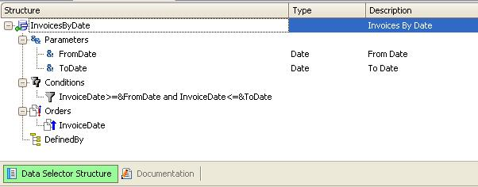
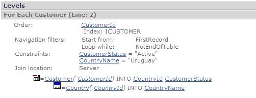
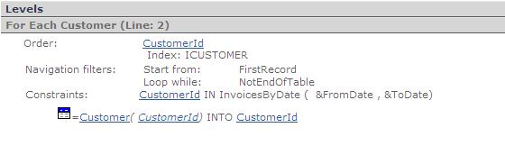

Data Selectors in For Each command
There are two ways to use Data Selectors in For Each command:
- Through the "USING" clause.
- Through the "IN" operator in the Where clause.
Depending on how they are used, the attributes included in the Data Selector definition are involved or not in determining the Base Table of the For Each command.
1. 'USING' clause
Syntax
For Each USING DataSelectorName([parm1 [,parm2 [, ..] ] ])
...
EndFor
Examples
A) For each USING ActiveCustomers()
...
EndFor
The "ActiveCustomers" Data Selector definition is as follows:

B) For Each USING InvoicesByDate(&FromDate, &ToDate)
....
EndFor
The "InvoicesByDate" Data Selector definition is as follows:

Features
When invoking a Data Selector through the "USING" clause in a For Each, the Data Selector doesn't have an associated navigation (it doesn't have a base table by itself). At specification time, the Data Selector definition is combined with the For Each definition to determine the table that will be navigated, taking into account the attributes of both definitions. In addition:
- If the For Each and the Data Selector have Conditions, both are considered<
- If the For Each and the Data Selector have Order clause(s), the resulting Order will be a combination of them. The For Each order has priority, so in the event that GeneXus discards a Data Selector Order, a warning spc0135 will be triggered at specification time
Suppose you have the following For Each that invokes the "ActiveCustomers" Data Selector through the USING clause:
For Each Using ActiveCustomers()
Where CountryName = "Uruguay"
...
EndFor
This is expanded at specification time to:
For Each
Where CustomerStatus = "Active"
Where CountryName = "Uruguay"
...
EndFor
Note: if you invoke the Data Selector within the For Each (above example), performance is the same as if you wrote both Where clauses within the For Each.

Navigation Report: the Data Selector is not detailed.
Suppose you have defined a For Each sentence that contains conditional orders + one unconditional order ('default' order), and it invokes a Data Selector through the "USING" clause. As the For Each command only accepts one 'default' order, the specification's result will be the For each with its conditional orders + Data Selector conditional orders + the For Each 'default' order (the Data Selector 'default' order will be discarded, and the navigation report will show a spc0135 warning).
2. 'IN' Operator in the Where clause
Syntax
For Each
Where [not] <attribute> IN DataSelectorName([parm1 [,parm2 [, ..] ] ])
EndFor
Example
For Each
Where CustomerId IN InvoicesByDate(&FromDate,&ToDate)
...
Endfor
Features
When invoking a Data Selector through the "IN" operator in the For Each Where clause, the Data Selector has a base table by itself. This means that a SELECT sentence will be generated for the Data Selector definition, which will be a different and independent SELECT from the SELECT sentence that will be generated in relation to the For Each.
Up to GeneXus 15 Upgrade 5, the attribute that precedes the "IN" operator must belong to the extended table of the Data Selector base table. In the above example, CustomerId belongs to the extended table of INVOICE, which is the "InvoicesByDate" Data Selector base table. Since GeneXus 15 upgrade #6 the attribute associated to the "IN" operator does not necessarily need to belong to the extended table. The following specification is valid where there is no relationship between tables Customer and Provider.
For Each Where CustomerId In ProviderIds()
...
EndFor
ProviderIds Data Selector specification is as follows:
Defined by: ProviderId
Notice the usage of the Defined by clause. The resulting SQL statement is similar to the following where there is no relationship between tables Power and User.
SELECT.... FROM [Customer] WITH WHERE [CustomerId] IN (SELECT [ProviderId] FROM [Provider])
The Data Selector query will return a collection of values corresponding to the same definition as the attribute which precedes the IN operator. In the above example, the Data Selector returns “a customers list” with invoices in the given range.
So, the For Each base table is determined by taking into account only the For Each attributes (Data Selector attributes are not considered). The For Each will navigate its base table and extended table, filtering the records which contain a customer of the customers list returned by the Data Selector.
In other words, in the above example, the Data Selector will return what you need as long as the attribute to the left belongs to the extended table of the Data Selector base table. The internal mechanism of the extraction operation is not important; what's important is that you can declare a Data Selector and it can be called by any other object.

Navigation Report: the Data Selector is not detailed.
Some doubts may arise in relation to the order displayed in the Navigation Report, as the order specified in the Data Selector is InvoiceDate and the order detailed in the Navigation Report is CustomerId. Actually, the latter corresponds to the order of the For Each command. The Data Selector, whose navigation is not detailed by GeneXus, accesses through InvoiceDate.
Advanced notes
The Data Selector's navigation will be generated as a subselect of the For Each select. So, if the Data Selector has its own conditions, they must be evaluated in the server by the DMBS. Taking this into account, the following error/warnings could appear at specification time:
- spc0053 Conditional constraint %1 cannot be generated in group starting at line n. Changed to standard constraint.
If the Data Selector has a conditional constraint, it will be automatically changed to a standard constraint.
- spc0144 Condition %1 found in DataSelector %2 cannot be evaluated in server.
There are still some functions that cannot be evaluated in the server.
Compound Keys considerations
The "IN" Operator takes into account the attribute preceding the "IN" clause; if you want to filter using a compound key you will need to create a new redundant formula attribute with the concatenation needed. Using the above example, suppose you want to add multi-tenant support; a possible design is to add a TenantId* (key composition) attribute as part of all tables. To use the In operation you will need to create a TenantIdCustomerId redundant attribute to do the filter.
For Each
Where TenantIdCustomerId IN InvoicesByDate(&FromDate,&ToDate)
...
Endfor
See also
Data Selectors in Grids
Data Selectors in Aggregations
Data Selectors in Data Providers
Data Selectors in For Each command
Data Selectors in Web Panels
Work With for Smart Devices List Node
Entry Panels as Filters for a List in Smart Devices